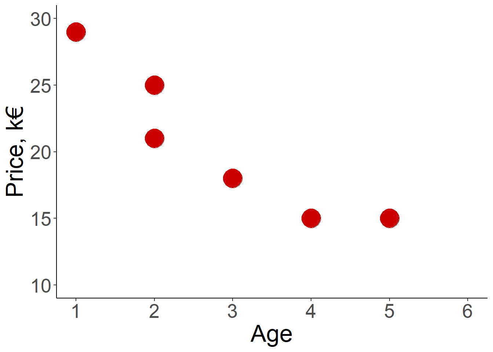
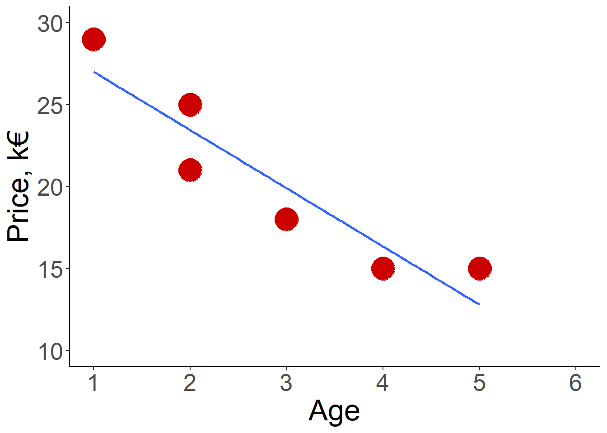

Price Age
1 29 1
2 25 2
3 21 2
4 18 3
5 15 4
6 15 5Здесь будут храниться лекции:
Лекция 8:
План лекции
Что такое ковариация и корреляция
Линейная регрессия
Линейная регрессия
Вообще линейная регрессия является частью общей линейной модели, куда входит также дисперсионный анализ (ANOVA).
Общий принцип GLM заключается в том, что у нас есть зависимая переменная (dependent variable), которую мы пытаемся описать (предсказать) одной или несколькими независимыми переменными.
В случае линейной регрессии зависимая переменная должна быть непрерывной, в то время как независимые могут быть как непрерывными, так и категориальными.
Предсказать - значит найти такую функцию вида y = f(x)
Примеры функций
\(y = x\):
yв точности равноx\(y = ax\):
yравноxумноженное на константуa.aв этом уравнении часто называют наклон (slope)\(y = ax + b\):
yравноxумноженное на константуaплюс значение константыb\(y = x^2\) квадратичная зависимость
Нотация уравнений в статистике
Обычно используется уравнение вида:
\(y = \beta_0 + \beta_1x_1 + e\), где \(\beta_0\) это интерсепт или перехват (intersept), \(\beta_1\) чаще называют коэффициентом (а не наклоном), а \(e\) это остаток (residual или error term) - поскольку мы работаем с реальными данными, то почти никогда зависимая переменная y не будет предсказываться в точности независимыми
Пример разбора линейной регрессии
Создадим игрушечный датасет по предсказанию цены автомобиля в зависимости от возраста. Цены указаны в тысячах евро.
Построим диаграмму рассеяния (scatterplot), чтобы отразить зависимость цены от возраста

Теперь попробуем провести прямую линию, которая будет наиболее хорошо описывать точки
Пример разбора линейной регрессии

Допущения линейной регрессии
Ограничения данных: предсказываемая переменная должна быть непрерывной, интервальной или ранговой, в теории неограниченной. Независимые переменные могут быть как непрерывными, так и категориальными.
Независимость: каждое наблюдение должно быть независимым от остальных
Линейность: зависимость между зависимой переменной и независимой должна быть линейной
Гомоскедастичность (homoscedasticity) - однородность дисперсий
Независимость и нормальное распределение остатков (ошибок, residuals)
Проверка на мультиколлинеарность - в случае множественной линейной регрессии
Проверка допущений
Нужно отрисовать сам график и QQ-plot
scatter plot:

Например такой график говорит о почти полном соблюдении допущения гомоскедастичности:

Мультиколлинеарность
Если в множественной линейной регрессии много скоррелированных друг с другом переменных, то это может сильно испортить значения коэффициентов, p-value и доверительные интервалы. Чтобы проверить на скоррелированность нужно посчитать VIF (variance inflation factor)